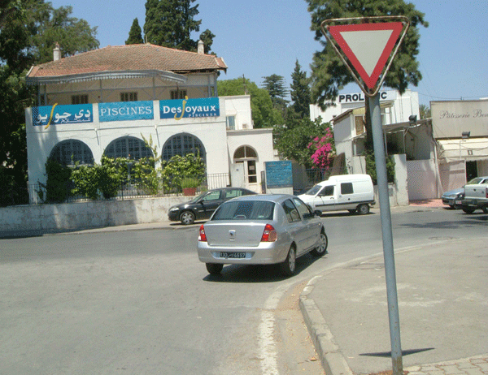
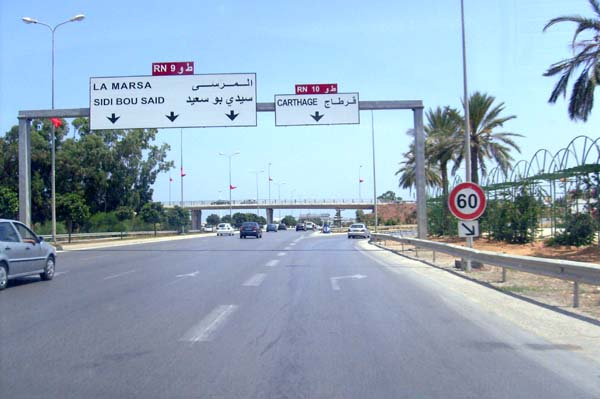
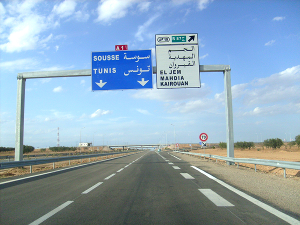
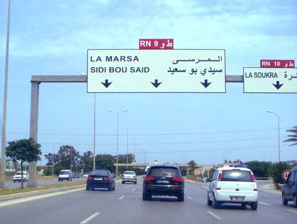
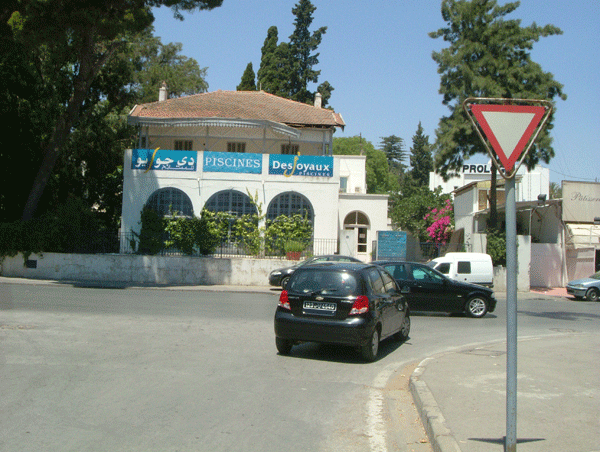

الهدف من هذا الباب
هو معرفة الاحتياطات الواجب اتخاذها قبل الانعطاف إلى اليمين أو الى اليسار لسلك طريق أخرى أو للدخول إلى ملك مجاور .
الإحتياطات الواجب إتخاذها قبل الدوران
•عند تغيير الاتجاه بالمفترقات, يجب على كل سائق أخذ الاحتياطات التالية :
-أن يتأكد من أن المعبد الذي يريد التوغل فيه مفتوح للجولان
-أن يتأكد من عدم وجود علامة تمنعه من التوغل في المفترق .
•حتى يمكن الدوران يجب السير بسرعة معتدلة .
•وقبل التخفيض من السرعة يجب :
-أن يتفقد المرايا العاكسة للرؤية
-أن يتأكد من إمكانية القيام بالمناورة
-أن ينبه مسبقا بنيته للدوران وذلك بتشغيل إشارات تشغيل الاتجاه
أن يتجنب الضغط على الفرامل بقوة حتى لا يفاجئ العربات التي تسير وراءه .
•وقبل مغادرة الطريق يجب أن يحترم قواعد الأولوية.

للدوران إلى اليمين
على السائق أن ينحاز بقدر الإمكان إلى الحافة اليمنى للمعبد, وأن يقوم بهذه العملية قدر الإمكان في فضاء ضيق
للدوران لليسار
يجب الانحياز:
=>بقدر الإمكان إلى محور المعبد إذا كان الجولان في الاتجاهين.
=>أو إلى الحافة اليسرى من المعبد إذا كان الجولان في اتجاه واحد.
إذا كان المعبد يحتوي على أكثر من سبيل يتابع السائق سيره و يسلك السبيل الذي يحتوي على السهم الموجه نحو اليسار.
•عند تغيير الاتجاه يجب على السائق فسح مجال المرور :
-للعربات القادمة من الاتجاه المعاكس على المعبد الذي يتأهب لمبارحته
-للدراجات والدراجات النارية المتجولة على المعبد الذي يتأهب لسلوكه
-للمترجلين الذين يجتازون ذلك المعبد.
•وعند إتمام عملية المناورة يجب على السائق توقيف إشارات تغيير الاتجاه.



